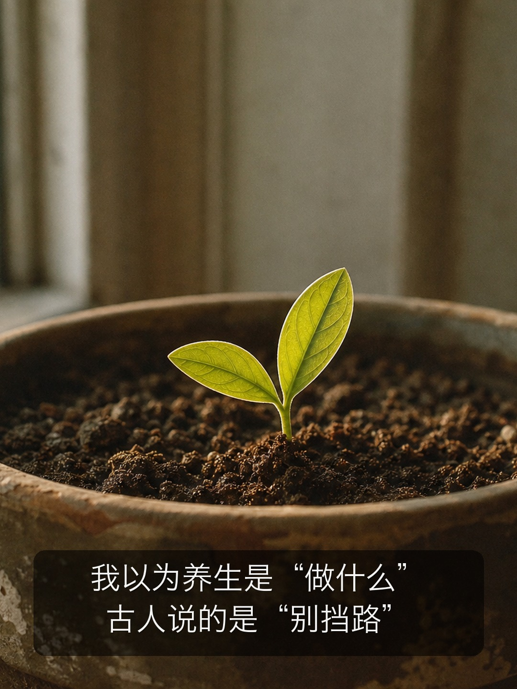
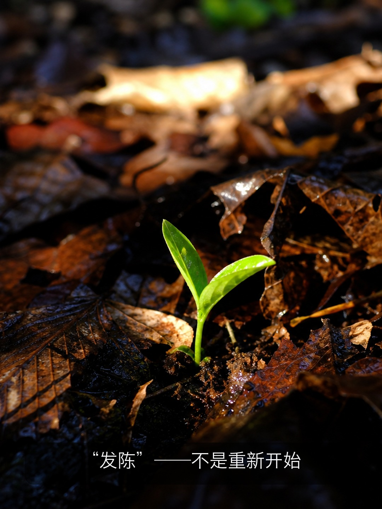
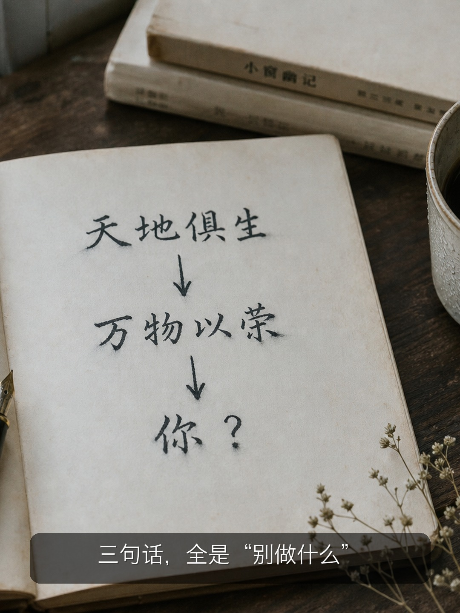
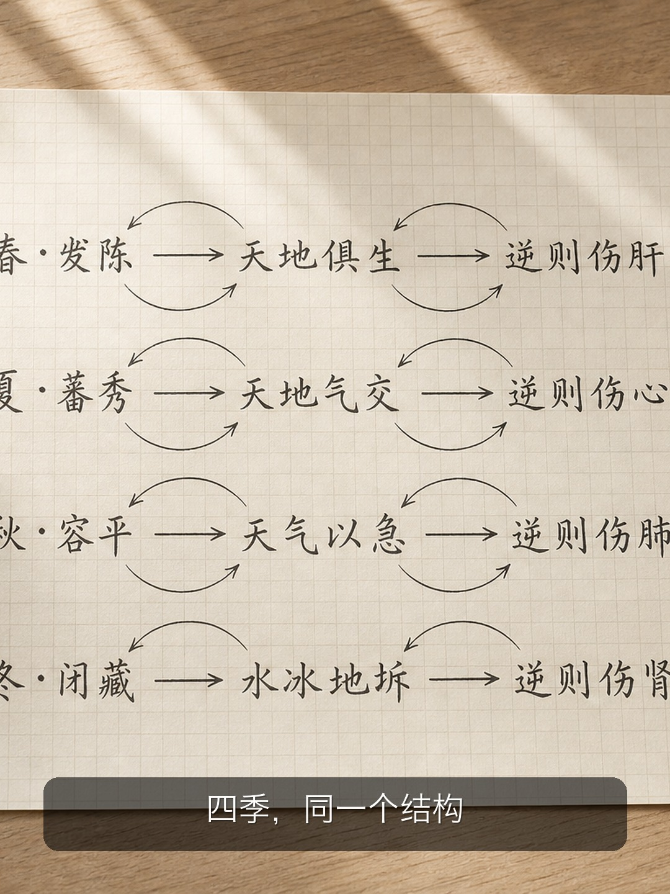
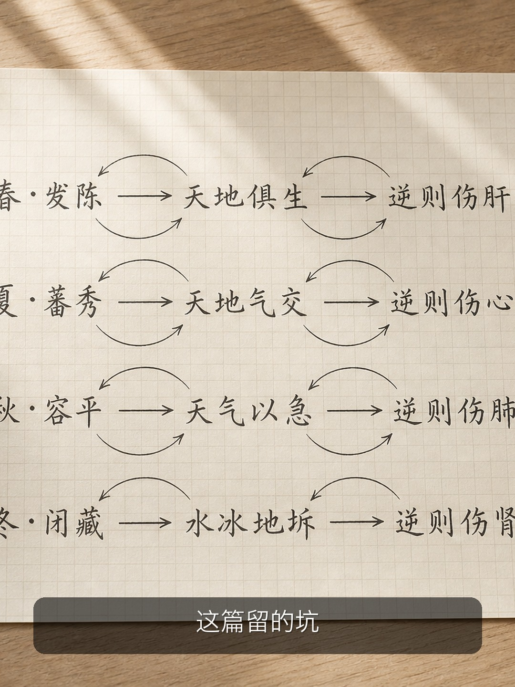
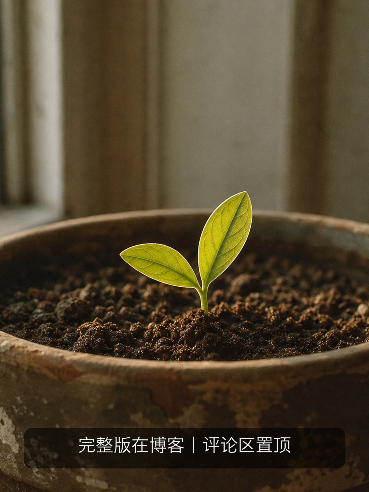

写在最前：这是我读《黄帝内经》的学习笔记，不是教学。我读得慢、读得浅，会读错。看到不对的地方欢迎指正——但请不要把我写的任何内容当作就医建议。

《素问·四气调神大论》，开篇：
春三月，此谓发陈。天地俱生，万物以荣，夜卧早起，广步于庭，被发缓形，以使志生，生而勿杀，予而勿夺，赏而勿罚，此春气之应，养生之道也。逆之则伤肝，夏为寒变，奉夏者少。
换篇了。从《上古天真论》跳到《四气调神大论》——光看篇名就知道风格变了。前一篇讲世界观，这一篇讲"四种气（季节）对应怎么调神"。
上一篇结尾我说：从世界观进入实操。
现在翻开了。
读《上古天真论》的时候，我心里一直有个声音：好，知道了，法于阴阳、形与神俱、真人至人圣人贤人——**然后呢？我明天早上起来该干什么？**
《四气调神大论》一上来就回答了：
夜卧早起。广步于庭。被发缓形。
晚上睡，早上早起，出去走走，把头发散开、身体放松。
我松了口气。终于不是哲学了。终于有一件事是我明天就能试的。
然后我读了第二遍。
第二遍我注意到一个结构上的事——**这段话不是从"你该做什么"开始的**。
它从天地开始。
春三月，此谓发陈。天地俱生，万物以荣。
先是天地在动：天和地一起生发，万物开始繁荣。
然后才轮到你：夜卧早起，广步于庭，被发缓形。
这个顺序让我停了一下。
现代养生的逻辑是这样的：你应该做A、B、C，因为对你的身体好。主语是"你"，目的是"你的健康"。
《内经》这段话的逻辑完全不一样：**天地已经在朝某个方向动了，万物已经在顺着这个方向长了——你是万物之一，别逆着来就行。**
不是"你要努力做到春天的样子"，而是"春天已经来了，你别挡路"。
这个区别很大。前者是加法——你得额外做点什么；后者是减法——你别做错的事就行。

回到头两个字。
**"发陈"**。发，是发散、推出去。陈，是旧的、积存的。
春天不叫"发新"，叫"发陈"。
它发散的不是新东西，是冬天积下来的旧东西。去年的落叶腐烂成了土壤里的养分，被春天的根系重新吸上来——"陈"不是废物，是储备，只是需要被重新激活。
这跟我以前对春天的理解不太一样。我一直觉得春天是"新的开始"，一月一号立flag那种。但"发陈"说的是：**你不是从零开始，你是把之前攒下来的东西推出来用**。
反过来想——如果冬天什么都没攒，春天能发什么？
我想了想我上一个冬天。好像确实没攒什么。

这段话的后半段给了三条指令：
生而勿杀，予而勿夺，赏而勿罚。
第一遍我读成了三条"应该做的事"：让事物生长、给予、奖赏。
第二遍我才发现，这三句全部是**否定句**。重心不在"生""予""赏"上，而在"勿杀""勿夺""勿罚"上。
它没说"你要去创造、去给予、去奖赏"。它说的是：**有东西正在生长——别杀它。有东西在给予——别抢。有东西值得赏——别罚。**
又是减法。
春天的养生，从头到尾都不是在叫你"做"什么。它在叫你**停止做某些事**——停止紧绷、停止压制、停止掐掉那些刚冒头的东西。
这让我想到一件事。
我是一个习惯在念头刚冒出来的时候就评判它的人。一个想法刚出现，我的第一反应不是"让它长长看"，而是"这靠谱吗""这有用吗""这会不会失败"。
"生而勿杀"——如果这说的是内心刚萌发的念头，那我不只春天在"杀"，我一年四季都在杀。
逆之则伤肝，夏为寒变，奉夏者少。
第一遍读这句我没当回事。春天做错了会伤肝，好的，记住了。
第二遍读才发现，这句话不只是在说"春天做错的后果"——它在说**季节之间的能量是传递的**。
春天做错了 → 伤肝（春天对应肝）→ 夏天会出现"寒变"→ 能供夏天用的能量变少。
春天的能量不是只属于春天的。它被用完之后，要移交给夏天。如果春天被你搞砸了，夏天接手的是一个亏空的账。
这就好像一个接力赛：春天跑完了要把棒递给夏天。你春天摔了一跤，不只是你摔了——**后面三棒都被拖慢了**。
"奉夏者少"——能奉献给夏天的东西变少了。
我在这里突然明白了为什么这篇叫"四气调神大论"而不是"春天养生指南"。因为四个季节不是四个独立的主题，它们是一个连续的系统。你不能只管春天。你春天的所有作为，都在为夏天攒能量——或者透支夏天的能量。

用大白话复述（依然标注"未必对"）：
春天这三个月，天地万物都在往外冒、往上长。你不需要做多少额外的事——早起走走、让身体别绷着就行。关键是别对着干：内心刚冒出来的东西，别急着掐掉；该松的地方，别硬撑着。因为春天攒的东西是要交给夏天用的，你现在对着干，损失的不只是这个春天，是后面整条链。
最让我意外的，不是具体的养生动作——"早起散步"我妈也会说。让我意外的是整个逻辑结构：**不是"你应该做什么"，而是"天地已经在做了，你别反着来"**。
这跟我接受的所有现代教育都反过来了。现代教育说：你要主动、你要计划、你要设定目标然后努力去达成。《内经》说：天地有它自己的节奏，你的任务是听到这个节奏然后跟上，而不是自己另起一个。
我不确定我真的懂了。但至少，读完这段之后我开始怀疑：我每天早上拿起手机、打开待办清单、开始"高效工作"——这件事本身，是不是一种"逆春气"？

1. **"以使志生"——志到底是什么？** 这段里"志"出现了一次，我几乎忽略了。但中医里"志"好像有专门的归属（跟肾有关？），春天让志"生"是什么意思？留着。
2. **四季之间的能量传递机制是什么？** "逆之则伤肝，夏为寒变，奉夏者少"——春伤肝→夏寒变，这个因果链的中医逻辑到底是什么？不是"我信"的问题，是"我还没看懂"的问题。
3. **这一篇的其他三个季节是不是同一个结构？** 我往后翻了翻，夏秋冬三段看起来和春天格式一样：先描述天地在干嘛，再给人的动作，最后说逆之伤什么。如果是同一结构，那四季就是一个系统模型的四次应用。
下一篇继续《四气调神大论》：
夏三月，此谓蕃秀。天地气交，万物华实……
春天是"别挡路"，夏天是"天地气交"——天气地气开始交汇。
听起来比春天更热闹。我们看看它叫人做什么——大概也不是做什么，是别做什么。
下篇见。
